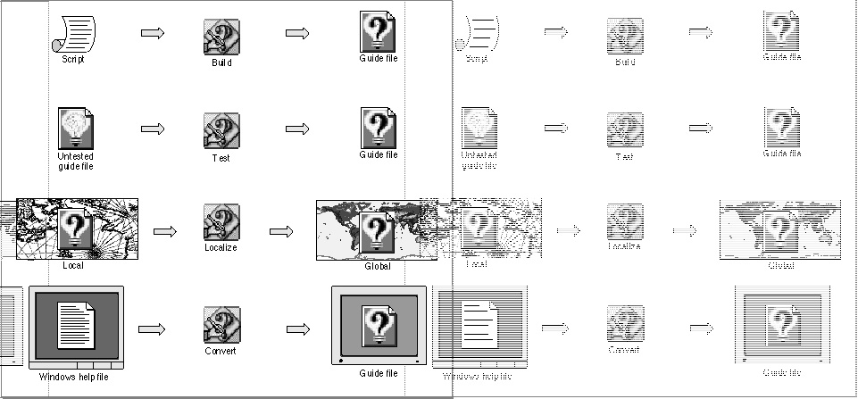

Chapter 4 - Introduction to Guide Maker
In Part 1 of this book, you learned about Apple Guide and about designing your Apple Guide online assistance. This part of the book describes how toThe CD-ROM accompanying this book contains an application, called Guide Maker, that you can use to build, test, localize, and convert your online assistance. (You can find Guide Maker in the Apple Guide:Authoring folder.) Figure 4-1 illustrates these four tasks and shows the role Guide Maker plays in accomplishing them.
- create your online assistance (build your guide file)
- ensure that your online assistance works as you expect (test your guide file)
- get your online assistance ready for the global market (localize your guide file)
- make your Windows help files available for the Mac OS (convert to Guide Script files)
Figure 4-1 Building, testing, localizing, and converting your online assistance using Guide Maker

The next section gives an overview of Guide Maker.
Chapter Contents
- Guide Maker Overview
- Which Chapter Should I Read?